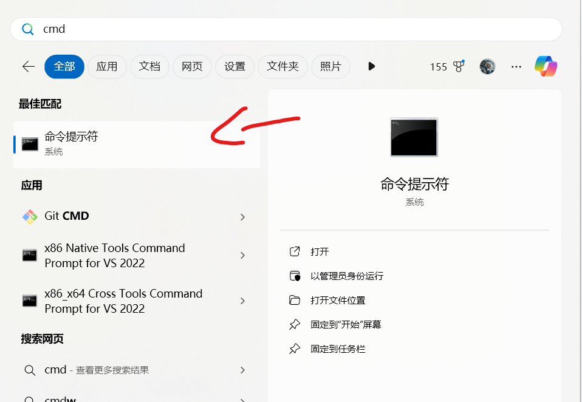

SillyTavern 酒馆完整部署教程 - 保姆级安装指南 🎮
如果你是编程小白，或者只想快速部署酒馆，可以看看我们的零基础傻瓜版教程 - 那边只需要按回车就能装好！
这个版本会详细解释每个安装步骤，适合想要了解技术细节或需要更灵活配置的朋友们。来和我一起深入了解如何搭建属于你的虚拟酒馆吧！😊
开始前的必读提示
- 本教程为完整版，会包含一些技术概念的解释，便于你日后维护和调试
- 记得全程开启 VPN（除非你已经在墙外啦），因为我们需要访问 GitHub
- 每个步骤都有详细说明，建议按顺序完成，这样出问题时也容易定位
- 目前是 Windows 版本的教程，Mac 和 Linux 的配置会有所不同
为什么选择 Docker 部署？🤔
相比直接安装，Docker 部署有这些优势：
- 隔离环境：不会污染系统环境，想删除时也很干净
- 跨平台兼容：同样的部署方式适用于各种系统
- 版本管理：可以轻松切换不同版本，支持多开
- 自动运维：开机自启动，无需手动管理
- 标准化配置：避免各种环境问题导致的配置困难
当然，也存在一些需要注意的地方：
- 首次配置需要多装一个 Docker（但后面部署其他应用也能用）
- 更新时需要注意备份（不过我们会提供完整的备份说明）
前置环境配置 🛠️
安装 WSL2（Windows必需） 🐧
-
访问 微软官方指南
-
使用自动安装方法（简单推荐）：
- 右键开始菜单 -> 以管理员身份运行 PowerShell
- 输入命令并回车：
- 等待安装完成后重启电脑
- 重启后等 Ubuntu 自动安装完成即可
如果自动安装失败，请使用手动安装：(如果第2步成功无视这一步)
- 以管理员身份运行 PowerShell
- 输入下面两条命令：
- 重启电脑
- 下载 WSL2 Linux 内核更新包
- 安装下载的更新包
- 再次打开管理员 PowerShell，输入：
安装提示
- 需要 Windows 10 版本 2004 及以上（Win+R 运行 winver 可查看）
- 全程记得开启 VPN，不然下载很慢
- 如果安装不顺利，先把 Windows 更新到最新版本
安装 WSL2 成功后，我们就可以开始安装 Docker Desktop 啦！
Docker Desktop 安装
-
去 Docker Desktop 官网 逛一下
-
点击下载按钮（就是那个显眼的蓝色按钮啦）
-
下载完双击安装就好
-
一路下一步，不用改任何东西（没错，就是这么简单！）
-
最后重启一下电脑，让 Docker 安心定居在你的电脑里~
{kind=link}
Git 安装
-
访问 Git 官网
-
点击下载按钮（Windows 版本）

-
安装的时候也是一路下一步就好啦~
检查一下准备工作做得怎么样 ✅
-
按一下键盘左下角的 Windows 键（找不到的话...那就百度一下吧 😅）
-
在搜索框输入 "cmd"，打开我们的老朋友命令提示符

-
在黑框框里输入：
应该能看到一大堆 Git 相关的说明：

-
再输入：
也会看到一堆 Docker 的介绍：

小贴士
如果上面哪个命令没反应，可能是安装出了小问题，重新装一下对应的软件就好啦~
开始部署我们的小酒馆！🚀
-
找一个你喜欢的文件夹（用来存放酒馆）
-
点击上面的地址栏，复制路径

-
在命令提示符里输入这些命令（记得把路径换成你自己的）：
小提示
如果中途关掉了命令窗口，记得重新 cd 到正确的地方哦~ 比如：
cd H:\MyFolder\SillyTavern\docker确保路径末尾是SillyTavern\docker -
输入启动命令：
等待进度条走完就好啦~
现在让我们确认一下酒馆是否部署成功： * 打开 Docker Desktop * 点击左侧的 Containers 按钮 * 检查是否有一个名为 "sillytavern" 的容器 * 如果看到绿色状态标记和 "Running" 状态，就说明部署成功啦！

-
现在需要添加允许访问的IP：
- 先用浏览器访问
http://localhost:8000/ - 你会看到一个报错页面，里面会显示需要添加的IP地址

- 回到安装文件夹，进入 docker/config 目录
- 找到 config.yaml 文件并打开

- 在 whitelist 下面添加以下IP：
这些IP是什么？
- 这些是本地访问需要用到的IP地址：
::1和127.0.0.1是本机地址172.18.0.1是Docker内网地址- 如果报错页面显示了其他IP，也要一起加进去哦~
- 先用浏览器访问
-
修改完配置文件后,重启容器让配置生效:
- 回到 Docker Desktop
- 找到你的酒馆容器
- 点击右边的重启按钮(两个循环箭头的图标)或右键选择"Restart"
- 等待容器重启完成

-
大功告成！🎉 现在再次访问
http://localhost:8000/就能看到你的专属酒馆啦！
更新小酒馆 🔄
更新前的叮嘱
一定要记得备份！虽然一般不会出问题，但是备份一下总是好的~ 📦
更新步骤：
-
复制一份
SillyTavern\docker文件夹的内容（以防万一） -
在命令提示符里输入：
最后的小贴士 💡
-
如果要用 SD、ComfyUI 或 Ollama 之类的本地服务，记得把地址改一下：
- 原来的
http://127.0.0.1:xxxx - 改成
http://host.docker.internal:xxxxxxxx 是端口号， 为啥要改？因为我们的酒馆在 Docker 小房子里，要用特殊的方式才能和外面联系啦~
- 原来的
-
你的所有重要文件（角色卡、世界书、插件等）都在
SillyTavern\docker文件夹里，更新前记得备份哦！
好啦！现在你已经拥有了自己的小酒馆，开始愉快地玩耍吧！🎊 有问题随时问我哦~ 😊